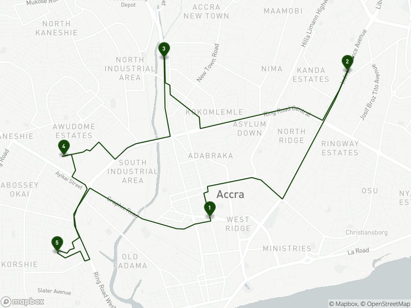

navigation.Rmdmapboxapi supports the use of Mapbox’s Directions, Isochrone, Matrix, and Optimization APIs, and are designed to be incorporated into R analysis workflows using sf, Shiny, and other packages. Navigation output should be visualized on a Mapbox map; see the vignette on mapping with mapboxapi for how to accomplish this in R.
The mb_directions() function computes a route between an origin and destination, or optionally along multiple points in an sf object. Output options include the route or the route split by route legs as an sf linestring, or the full routing output as an R list for additional applications.
library(mapboxapi)
library(leaflet)
my_route <- mb_directions(
origin = "10 Avenue de Wagram, 75008 Paris France",
destination = "59 Rue de Tocqueville, 75017 Paris France",
profile = "cycling",
steps = TRUE,
language = "fr"
)
leaflet(my_route) %>%
addMapboxTiles(style_id = "light-v9",
username = "mapbox") %>%
addPolylines()Instructions are available in a variety of different languages:
my_route$instruction## [1] "Se diriger vers le nord-est sur l’avenue de Wagram"
## [2] "Tourner à droite sur la rue du Faubourg Saint-Honoré"
## [3] "Tourner à gauche sur la place des Ternes"
## [4] "Tourner à droite sur la place des Ternes"
## [5] "Tourner à droite sur l’avenue de Wagram"
## [6] "Tourner à droite sur la rue Jouffroy d’Abbans"
## [7] "Tourner à droite sur la rue de Tocqueville"
## [8] "Vous êtes arrivé à votre destination, sur la droite"Optimized routes along multiple coordinates are available with the mb_optimized_route() function:
library(sf)
to_visit <- data.frame(
X = c(-0.209307, -0.185875, -0.216877, -0.233511, -0.234541),
Y = c(5.556019, 5.58031, 5.582528, 5.566771, 5.550209)
) %>%
st_as_sf(coords = c("X", "Y"), crs = 4326)
optimized_route <- mb_optimized_route(to_visit,
profile = "driving-traffic")
optimized_map <- static_mapbox(
style_id = "light-v9",
username = "mapbox",
overlay_sf = optimized_route$route,
overlay_style = list(
stroke = "#144708"
),
overlay_markers = prep_overlay_markers(
data = optimized_route$waypoints,
marker_type = "pin-l",
label = optimized_route$waypoints$waypoint_index,
color = "144708"
),
height = 800,
width = 1200
)
optimized_map
The Mapbox Isochrone API returns polygons representing isochrones, or areas reachable within a given travel time, around a given location. mapboxapi returns Mapbox isochrones as sf objects for visualization and analysis. Input locations can be coordinate pairs, addresses, or sf objects themselves. The example below returns three walking isochrones around The Kremlin in Moscow; users can also optionally get street network-aware distances by using the distance argument instead of time and supplying a vector of distances in meters.
library(mapdeck)
isochrones <- mb_isochrone("The Kremlin, Moscow Russia",
time = c(4, 8, 12),
profile = "walking")
mapdeck(style = mapdeck_style("light")) %>%
add_polygon(data = isochrones,
fill_colour = "time",
fill_opacity = 0.5,
legend = TRUE) Travel-time matrices are available in the mb_matrix() function. Requests are rate-limited internally to conform with Mapbox API limits; I’ve made internal modifications for larger-scale matrices but very large many-to-many matrices (more than 25 source coordinates and 25 destination coordinates) are not yet supported. mb_matrix() returns an R matrix object where each cell represents the travel time between an origin and destination pair. Coordinate pairs, addresses, and sf objects can be used as inputs. If sf polygons are used as the input, mb_matrix() will calculate travel times based on the polygon centroids, which should be double-checked for possible routing errors.
library(tigris)
philly_tracts <- tracts("PA", "Philadelphia", cb = TRUE, class = "sf")
downtown_philly <- mb_geocode("Philadelphia City Hall, Philadelphia PA")
time_to_downtown <- mb_matrix(philly_tracts, downtown_philly)
philly_tracts$time <- time_to_downtown
mapdeck(style = mapdeck_style("light")) %>%
add_polygon(data = philly_tracts,
fill_colour = "time",
fill_opacity = 0.6,
legend = TRUE)